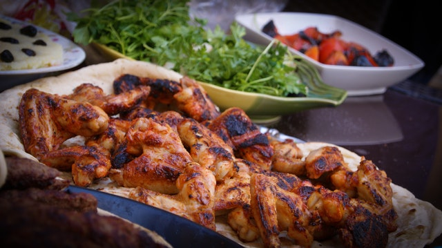
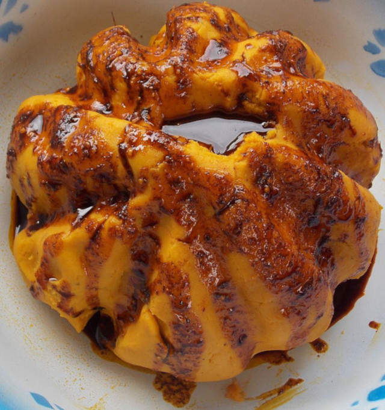
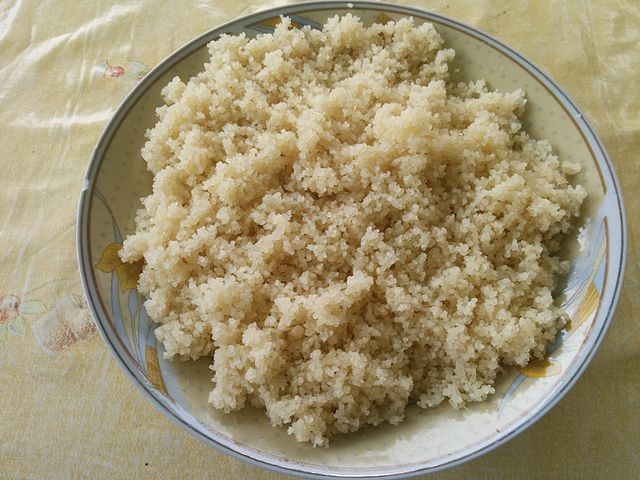
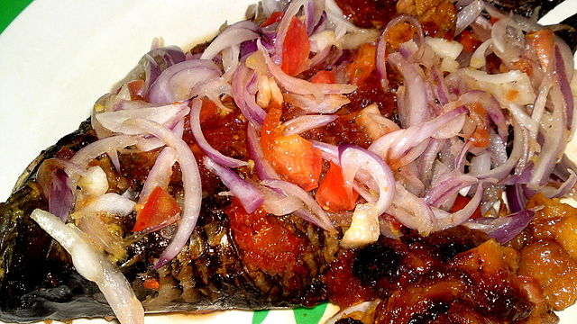

-

Le poulet braisé est un plat très appréciés et cuisiné dans les pays d'Afrique.
-

Le piment est un condiment qui ne saurait manqué dans la cuisine africaine.
-

Fait à base de banane plantain ou d'igname, le foufou est un plat consistant qui se consomme grandement dans les pays d'Afrique de l'Ouest. Il est accompagné d'une sauce au poisson ou à la viande.
-

Le placali est fait avec une pâte de de manioc cuite. Se mange avec une sauce à base de gombos à la viande ou au poisson.
-

L'attiéké, plat très consommé en Côte d'Ivoire, est fait à partir de manioc. C'est du "coucous" de manioc cuit à la vapeur.
-

De même que le poulet, le poisson braisé est hautement apprécié dans les pays cotiers africains. Il est mangé agrémenté de tomates, oignons et piments